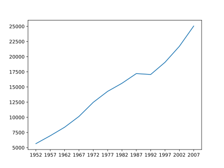

Visualizing Tabular Data
Last updated on 2024-02-23 | Edit this page
Overview
Questions
- How can I visualize tabular data in Python?
- How can I group several plots together?
Objectives
- Plot simple graphs from data.
- Plot multiple graphs in a single figure.
Visualizing data
The mathematician Richard Hamming once said, “The purpose of
computing is insight, not numbers,” and the best way to develop insight
is often to visualize data. Visualization deserves an entire lecture of
its own, but we can explore a few features of Python’s
matplotlib library here. While there is no official
plotting library, matplotlib is the de facto
standard.
Episode Prerequisites
Before we can start plotting, we need to load the data from one of
our files to use as an example. Start a new notebook and import the GDP
data for Europe into a dataframe called data_eu.
PYTHON
import pandas as pd
data_eu = pd.read_csv('data/gapminder_gdp_europe.csv', index_col='country')Countries are grouped into files by continent. Each country has its Gross Domestic Product (GDP) per capita (population) recorded in 5 year intervals from 1952 to 2007.
Dataframes have a .plot() method which we can use to
produce a line-plot of the data contained within the frame.
PYTHON
data_eu.plot()This has placed all of our data into a single plot that Python has
then displayed to us - clearly, there is far too much here for us to
take in! You might notice that Pandas has assumed we want to use the row
labels as the dependant variable for our plot, and the column headers as
the line-labels. In our case however, we want to display the GDP per
capital over time, using one line for each country. We can fix these
problems by combining two of the methods we saw in the previous episode;
- We can use an (index) slice to take only the first 5 countries, for
example. - We can transpose our dataframe to reverse the roles of our
rows and columns, so plot uses the columns as the dependant
variable and the rows as the line labels.
PYTHON
first_five_countries = data_eu.iloc[0:5, :]
first_five_countries.T.plot()Computing statistics across dataframe axes
Let’s begin our analysis of the data by plotting the average GDP
across Europe, as a function of time. Pandas dataframes have a built-in
function, mean() that we can use to help us here:
PYTHON
print(data_eu.mean())OUTPUT
1952 5661.057435
1957 6963.012816
1962 8365.486814
1967 10143.823757
1972 12479.575246
1977 14283.979110
1982 15617.896551
1987 17214.310727
1992 17061.568084
1997 19076.781802
2002 21711.732422
2007 25054.481636
dtype: float64You’ll notice that Pandas has assumed (again) that we want to get the mean for each year, or to “take the mean GDP down the columns”. However it may also be useful to know the average GDP for each country - in which case we want to take the average “along the rows” instead.
We could use the transpose method to reverse the roles of our rows
and columns like we did before, and then take the average.
Alternatively, mean() (and many other dataframe functions)
take an optional parameter called axis which lets us
specify which axis of the dataframe (rows or columns) to take the
average along.
Using the axis keyword, we can retrieve the average GDP
for each country by taking the average value across the columns
(by setting the argument axis='columns' to the
mean method):
PYTHON
data_eu.mean(axis='columns')OUTPUT
country
Albania 3255.366633
Austria 20411.916279
Belgium 19900.758072
... ...
Switzerland 27074.334405
Turkey 4469.453380
United Kingdom 19380.472986
dtype: float64Plotting statistics
The plot method called directly from our dataframe is
implicitly using matplotlib’s pyplot.plot
function. Whilst calling plot directly from a dataset can
be helpful to get a quick visual glimpse of the data, most of the time
we will want to manipulate our data in some way and plot some
significant statistics or derived values, rather than the raw data
itself. We will use the matplotlib library to manage and
create plots ourselves from here on. As with any library, we must first
tell Python to import it:
PYTHON
import matplotlib.pyplot as pltWe can now create a plot of the average GDP of European countries in the following way:
PYTHON
fig = plt.figure()
mean_gdp_each_year = data_eu.mean(axis='rows')
plt.plot(mean_gdp_each_year)
plt.show())
Let’s break down what each line is doing.
First, we use the figure function from the
matplotlib.pyplot library to create a new, blank figure
canvas. The variable fig can be used to access this figure
canvas.
PYTHON
fig = plt.figure()Then, we create a new variable mean_gdp_each_year, with
the average value of our data_eu dataframe across the rows
(down the columns).
PYTHON
mean_gdp_each_year = data_eu.mean(axis='rows')Next, using the plot function from the
matplotlib.pyplot library, we request to visualise the data
stored in mean_gdp_each_year into the figure canvas. If we
had multiple figures open, we could specify which one to plot this data
on. But since we only have one (fig), plt.plot
knows to plot the data onto this one. Finally, plt.show()
function displays the final result on the screen.
PYTHON
plt.plot(mean_gdp_each_year)
plt.show()Grouping Plots
So far, matplotlib’s plot hasn’t done much more than
dataframe’s plot function did - but that changes now. It is
often the case where we will want to display multiple statistics
side-by-side, or the same statistic from multiple datasets
simultaneously for comparison purposes. This can be achieved by adding
subplots to a figure, using the add_subplots
function. Let’s demonstrate how to do this by plotting the maximum and
minimum GDP of countries in Europe for each year alongside the average
GDP for that year.
To achieve this we will need: 1. to compute the min, max, and average GDP each year for European countries; 1. Create a new figure with the right canvas proportions; 1. Generate different subplots (“axes”) where to plot the data; and 1. Display the data in the screen.
PYTHON
eu_min_data = data_eu.min(axis='rows')
eu_max_data = data_eu.max(axis='rows')
eu_avg_data = data_eu.mean(axis='rows')
fig = plt.figure(figsize=(10., 3.))
axes_1 = fig.add_subplot(1, 3, 1)
axes_1.plot(eu_min_data)
axes_2 = fig.add_subplot(1, 3, 2)
axes_2.plot(eu_max_data)
axes_3 = fig.add_subplot(1, 3, 3)
axes_3.plot(eu_avg_data)
plt.show()Note how we’ve set the right axis arguments when computing the
different statistical properties (axis='rows'). The
parameter figsize tells Python how big to make this space
in relative units. In this case the width is a bit larger than three
times the height. Each subplot is placed into the figure using its
add_subplot method. The
add_subplot method takes 3 parameters. The first denotes
how many total rows of subplots there are, the second parameter refers
to the total number of subplot columns, and the final parameter denotes
which subplot your variable is referencing (left-to-right,
top-to-bottom). Each subplot is stored in a different variable
(axes_1, axes_2, axes_3). Once a
subplot is created, the axes can be used to place the desired plot for
each.
minandmaxmethods
The min and max functions can be used on a
dataframe in the same way as the mean function, and take
the same axis parameter. For us, this retrieves the minimum
GDP of countries in Europe for each year:
PYTHON
data_eu.min(axis='rows')OUTPUT
1952 973.533195
1957 1353.989176
1962 1709.683679
1967 2172.352423
1972 2860.169750
1977 3528.481305
1982 3630.880722
1987 3738.932735
1992 2497.437901
1997 3193.054604
2002 4604.211737
2007 5937.029526
dtype: float64Adding labels
Just because we have plotted some statistics doesn’t mean our plot is complete! - There are no axis labels telling us what each subplot is showing us. - There’s no title for the plot. - There’s a lot of whitespace (empty space) surrounding our plot, and between our subplots.
We can fix these using some more matplotlib functions. -
The set_ylabel method lets us add a label for the y-axis of
any plot or subplot, using dot notation. - The set_title
method lets us add a title to a subplot. - The suptitle
method lets us add a title to the figure window (“super”-title). - The
tight_layout method tells matplotlib to remove
as much whitespace as possible from our figure.
Putting it all together:
PYTHON
eu_min_data = data_eu.min(axis='rows')
eu_max_data = data_eu.max(axis='rows')
eu_avg_data = data_eu.mean(axis='rows')
fig = plt.figure(figsize=(10., 3.))
axes_1 = fig.add_subplot(1, 3, 1)
axes_1.plot(eu_min_data)
axes_1.set_ylabel('GDP/capita')
axes_1.set_title('Min')
axes_2 = fig.add_subplot(1, 3, 2)
axes_2.plot(eu_max_data)
axes_2.set_ylabel('GDP/capita')
axes_1.set_title('Max')
axes_3 = fig.add_subplot(1, 3, 3)
axes_3.plot(eu_avg_data)
axes_3.set_ylabel('GDP/capita')
axes_1.set_title('Average')
fig.suptitle('GDP/capita statistics for European countries')
fig.tight_layout()
plt.show()Setting limits for the axes
You might have noticed that our subplots leave a little bit of space between our line and the edges of the subplot itself, which is a result of the range of the y-axis being slightly bigger than the maximum and minimum range of the data we are plotting.
Can you figure out a way to manually set the range of the y-axis, to remove this white space?
Hint: - Try using the set_ylim(min_value, max_value)
method on the subplots. - Try using the max() and
min() methods on the eu_min_data
variables.
To fix this for the first subplot, we can set the y-axis limits to the overall minimum and maximum values of the dataframe.
PYTHON
axes_1 = fig.add_subplot(1, 3, 1)
axes_1.plot(eu_min_data)
axes_1.set_ylabel('GDP/capita')
axes_1.set_title('Min')
# Sets the y-limits to the min/max overall values to ease comparisson across the plots
y_axes_min_value = eu_min_data.min()
y_axes_max_value = eu_max_data.max()
axes_1.set_ylim(y_axes_min_value, y_axes_max_value)Or without creating intermediate variables, you could use
PYTHON
axes_1.set_ylim(eu_min_data.min(), eu_min_data.max())instead of the last three lines!
Drawstyles
The plot method doesn’t just draw straight, blue lines -
it can be customised with some optional parameters.
Modify your calls to plot with different parameters to
create different line styles in each of the three subplots. Some useful
parameters to add to plot are: -
linestyle = ':'. Can also be tried with '--',
'-.', and a few other options. -
color = 'red'. Several other colours are also available! -
marker = 'x'. There are lots of
different plotting markers to try out.
There are a ton of options to pick from here, but an example that draws a dashed, red line with crosses marking the datapoints is below:
PYTHON
axes_1.plot(eu_mean_data, linestyle=':', color='red', marker='x')PYTHON
std_plot = plt.figure()
std_data = data_eu.std(axis='rows')
plt.plot(std_data)
plt.show()PYTHON
eu_min_data = data_eu.min(axis='rows')
eu_max_data = data_eu.max(axis='rows')
eu_avg_data = data_eu.mean(axis='rows')
fig = plt.figure(figsize=(10., 3.))
axes_1 = fig.add_subplot(3, 1, 1)
axes_1.plot(eu_min_data)
axes_1.set_ylabel('GDP/capita')
axes_1.set_title('Min')
axes_2 = fig.add_subplot(3, 1, 2)
axes_2.plot(eu_max_data)
axes_2.set_ylabel('GDP/capita')
axes_1.set_title('Max')
axes_3 = fig.add_subplot(3, 1, 3)
axes_3.plot(eu_avg_data)
axes_3.set_ylabel('GDP/capita')
axes_1.set_title('Average')
fig.suptitle('GDP/capita statistics for European countries')
fig.tight_layout()
plt.show()Change the figure size to be taller than wider.
PYTHON
fig = plt.figure(figsize=(3., 10.))Change In GDP
The GDP data is longitudinal in the sense that each row represents a series of observations relating to one country. This means that the change in GDP over time is a meaningful concept. Let’s find out how to calculate changes in the data contained in an array with pandas.
The DataFrame.diff() function takes an array and returns
the differences between two successive values, depending of the axis
requested.
Let’s use it to examine the changes each year across the ages for Portugal.
PYTHON
portugal = data_eu.loc['Portugal']
print(portugal)OUTPUT
1952 3068.319867
1957 3774.571743
1962 4727.954889
... ...
1997 17641.031560
2002 19970.907870
2007 20509.647770
Name: Portugal, dtype: float64Calling portugal.diff() would do the following
calculations
PYTHON
[ 3068.31 - NaN, 3774.57 - 3068.31, 4727.95 - 3774.57, ..., 19970.90 - 17641.03, 20509.64 - 19970.90 ]and return the 12 difference values in a new series.
PYTHON
portugal.diff()OUTPUT
1952 NaN
1957 706.251876
1962 953.383146
... ...
1997 1433.764930
2002 2329.876310
2007 538.739900
Name: Portugal, dtype: float64Note that the first value is NaN because can’t substract a value to the first element.
When calling DataFrame.diff with a 2-dimensional
dataframe, an axis argument may be passed to the function
to specify which axis to process. When applying
DataFrame.diff to our 2D GDP dataframe, which axis would we
specify to obtain differences between the same country?
Since the row axis (0) is countries, it does not make sense to get the difference between two arbitrary countries. The column axis (1) is in years, so the difference is the change in GDP – a meaningful concept.
PYTHON
data_eu.diff(axis=1)By using the DataFrame.max() function after you apply
the Dataframe.diff() function, you will get the largest
difference between days.
PYTHON
data_eu.diff(axis=1).max(axis=1)OUTPUT
country
Albania 1411.157133
Austria 3827.023200
Belgium 3523.102370
... ...
Switzerland 4228.968720
Turkey 1950.190666
United Kingdom 3724.262090
dtype: float64If GDP values decrease along an axis, then the difference
from one element to the next will be negative. If you are interested in
the magnitude of the change and not the direction, the
DataFrame.abs() function will provide that.
Notice the difference if you get the largest absolute difference between readings.
PYTHON
data_eu.diff(axis=1).abs().max(axis=1)OUTPUT
country
Albania 1411.157133
Austria 3827.023200
Belgium 3523.102370
... ...
Switzerland 4228.968720
Turkey 1950.190666
United Kingdom 3724.262090
dtype: float64Key Points
- Use the
pyplotmodule from thematplotliblibrary to create visualizations of data. - Dataframes have methods like
min,max, andmeanto compute statistics along either the rows or the columns. - Use
axisargument in statistic functions to calculate the values across the specified axis. - We can use
add_subplotto create multiple plots in a single figure. - We can customise the labels, axis ranges, line styles, and more of
our plots using
matplotlib.